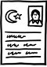

"Her insan başkaları olmak ister, başkaları da o olsun ister" der Ortega y Gasset. "Bir başkasını, öteki olmayı, ötekinin varlığıyla kaynaşmayı arzuladığımız oranda severiz." Fakat hemen ardından ekleme gereği duyar bu cenabet savaşlar ve yoksulluklar çağının bıkkın düşünürü: "Diş ağrımı, benim yerime çeksin diye bir başkasına devredemem. Bu söylediğim düpedüz ‘malumu ilan' elbette, ama çok verimli bir düşünüş biçimi aynı zamanda." İnsanın yaşamını başka birine devredemeyeceği gerçeğini hafife almayın, "herkes kendi başına yaşar – ya da aynı kapıya çıkan bir şey, yaşam yalnızlıktır, derin bir yalnızlık." Yalnızlığa kadife kılıflar biçebilmek için ya başkalarına öykünüyoruz ya da başkalarını kendimizden biri yapmaya çalışıyoruz. Salıncak bir uçtan öbür uca savruldukça değişen öncelikle isimlerimiz. Çünkü isimlerimizin bizim üzerimizde derin bir etkisi var çoğu zaman görmezden geldiğimiz. Üç kadim tektanrılı dinin tarihi, isimlendirmeler tarihi aynı zamanda. Yahudilik, isimlerin tılsımının bilincindeydi hep. Ölüm döşeğinde yatan bir hastanın ismini bu yüzden değiştirdi hahamlar; hastalık öteki isme yapışsın kalsın ve bu yeni isimle birlikte hasta canlansın, yeniden doğabilsin diye. Bu sebepten ötürü genellikle "yaşam" anlamına gelen "Hayyim" ismini taşıdı ölümden dönen hastalar. Keza Müslümanlık da bilincindeydi isimlerin tılsımının. Bu yüzden doğan her bebeğin kulağına üfledi ismini; ismiyle birlikte açsın gözlerini bu dünyaya diye. Ve Hıristiyanlık da idrak etmişti isimlerin nelere kadir olduğunu. Doğan her gün bir azizin, daha doğrusu bir azizin isminin günüdür Hıristiyan âleminde. Her yeni günle birlikte yeniden başlıyorsa yaşam, bunun ancak yeni bir isimle birlikte mümkün olduğunu hatırlatmak istercesine. Dinler tarihi, isimlerin tılsımının ve kudretinin tanıklıklarıyla yüklü.
Amerika'da onlarca internet sitesi salt isimler, isimlendirmelerle ilgili. Bir yandan bebeklere isimler öneriliyor, yeni ve denenmemiş, bir yandan çoktan mevcut isimlerin geçmişi araştırılıyor. Ama bu internet siteleri içinde özellikle biri var ki, o sadece isimlerin hikâyesini takip etmekle kalmıyor, bir de bu adları ve soyadlarını taşıyan insanların soyağaçlarını çıkarıyor. Yöntem basit, tek yapacağınız soyadınızı yazmak ve sonra soyadınızın izini süre süre geçmişe doğru kim olduğunuzu, kimlerden geldiğinizi bulmak. Bu ve benzeri siteler son derece popüler. Damar damar kendi tarihçesini arıyor insanlar.
Peki ya Türkiye'de ne kadar geriye doğru takip edebiliriz isimlerimizin ve benliklerimizin ayak izlerini, ailelerimizin, sülalelerimizin geçmişini? Ya da merak eder miyiz acaba? Bilmek ister miyiz? Özeleştiri yapmayı sevmeyiz pek fazla, hakkımızda yapılmasını da istemeyiz. Ama tutup da silkelesek miskinliğimizi, yitirdiğimiz isimler yağacak soyağacımızın dallarından. Kayıp isimler. Öncelikle başkalarının isimlerini değiştirmeyi sevdik biz. Öteki'nin ismini silmeyi. Kulağımıza azıcık farklı çalınmayagörsün bir isim, şüphelendik hemen o ismi taşıyandan. Azınlıklar, kenarda kalanlar, tutunabilmek için bu sistemde isimlerini değiştirmek zorunda kaldılar. Edebiyatımız da besledi bu ayıklama ve dönüştürme sürecini. Denemeleri, romanları ve keskin gözlemleriyle kıymeti halen yeterince bilinmeyen Peyami Safa, ne yazık ki aynı zamanda tahammülsüz biçimde ayıklamadı mı Öteki'nin isimlerini? Matmazel Noraliya'nın Koltuğu'nda Rum kadın kahramanı Noraliya'nın ismini Nuriye yaptığında; ya da onun gençliğinde âşık olduğu Yorgo'nun ismini Ferruh'a dönüştürdüğünde, Öteki'nin kendisi olmasına ne kadar izin verdi?
Erken dönem Türk romancıları hemen hemen hiçbir zaman karakterlerinin isimlerini tesadüfen ya da bir başka mesaja gönderme yapmaksızın kullanmadı. İsimler muhakkak bir kimlikle, bir aidiyetle ilişkilendirildi. Hep "başkası" olmayı istedik milletçe. Ama bir yandan da başkalarına karşı bir o kadar tahammülsüz, Öteki'nin isimlerine bigâne.
Çocuklarımıza verdiğimiz isimler, mevcut toplumsal, politik, sınıfsal düzenlemeler içindeki adreslerimizdir aynı zamanda. Nerede durduğumuzu, nereye ait olduğumuzu göstersinler isteriz. Çünkü biz aslında mümkün mertebe az ve öz bilmek istiyoruz ailelerimizin geçmişini, sildiğimiz ya da sildirdiğimiz isimlerin gerçeğini. Oysa az biraz merak etseydik o kayıp isimleri, "hızlandırılmış Batılılaşma" ile "bir-türlü-Batılılaşamama" arasında sarkaç gibi gidip gelen toplumsal sergüzeştimizi, isimlendirmeler tarihi olarak da okuyabilirdik belki. Yerimizi edinirken yitirdiğimiz ve yerimizi yitirirken edindiğimiz isimler tarihi olarak...
İstanbul